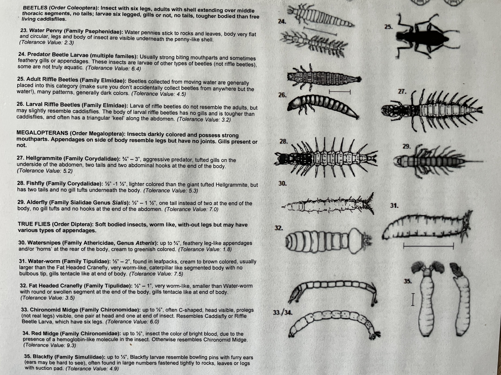
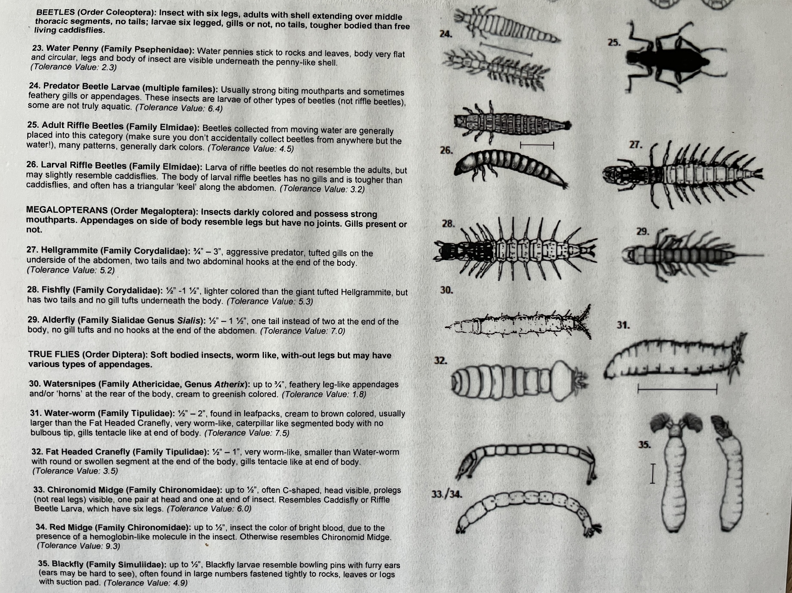

Water Quality in Buncombe County
The Impact of Hurricane Helene

Hurricane Helene
In September 2024, Hurricane Helene made landfall in the United States, unleashing extreme winds, deadly storm surge and numerous tornadoes. The cyclone, alongside a predecessor rainfall event (PRE), devastated portions of the southeastern United States and southern Appalachia with catastrophic flooding that caused significant loss of life and widespread destruction. With more than 200 fatalities, Helene became the deadliest tropical cyclone to hit the contiguous United States since Katrina in 2005. An estimate of $78.7 billion in damages places Helene as the seventh-costliest U.S. tropical cyclone, with records dating back to 1980.
Many cities in southern Appalachia, including Asheville, N.C., were affected by both the PRE and Helene’s main circulation for weeks and months after the rain and winds ceased; many communities are still recovering a year later. Impacts included power and cellular outages, historic flooding and landslides, and a lack of water infrastructure for nearly two months.
We know how Hurricane Helene damaged infrastructure and flooded waterways, but you may wonder what are the lasting impacts when it comes to water quality in our rivers and streams?
Lucky for you, theres an organization that can help!
The Environmental Quality Institute (EQI)
EQI collects scientific data that informs environmental understanding and decision-making. Their nonprofit laboratory monitors water quality in streams and lakes throughout western North Carolina. They curate reliable and objective data, expand awareness about regional water quality, and provide technical support to nonprofits, local governments, educational institutions, and communities to drive environmental improvements. EQI has been working with partners and volunteers to monitor western NC waterways since 1990. Sampling sites in 17 mountain counties and 7 NC river basins. Sharing results with more than 30 partner organizations and agencies.
Chemical testing is conducted monthly for all sites at EQI’s NC-certified laboratory as part of the Volunteer Water Information Network (VWIN) program. Aquatic macroinvertebrate sampling happens each spring and fall as part of the Stream Monitoring Information Exchange (SMIE) program, complementary to the VWIN chemical data collection.
Years of Monitoring
Stream and Lake Sites
Tests Run Annually
Partner Organizations
The Stream Monitoring Information Exchange (SMIE)
SMIE is a grant-funded biological stream monitoring project that has been sampling streams for bugs (benthic macroinvertebrates) since 2005. Each spring and fall, trained volunteers sample in small groups. Group Leaders with additional experience oversee the sampling and quality assurance protocols.
This type of stream monitoring, analysis of benthic macroinvertebrate populations, can provide essential watershed insights and greater understanding of water quality and habitat changes over time. Aquatic organisms are excellent indicators of the comprehensive water quality of a stream since they have limited mobility, specific habitat requirements, and distinct levels of pollution tolerance.

SMIE Ratings
The distinct levels of pollution tolerance are denoted by tolerance values assigned to them. Each type of macroinvertebrate has a distinct response to encountering pollution. A tolerance value quantifies this response. Each species has a tolerance value between 0 and 10, where 0 is extremely intolerant to pollution and 10 is very tolerant. Species with low tolerance values, extremely intolerant to pollution, are indicators of good water quality.
To the left is a stonefly larvae, a quick crawling predator.
It has a tolerance value of 1.3, it is very pollution intolerant.
To the right, on top is a water-worm and on the bottom is a damselfly larvae.
They have tolerance values of 7.5 and 7.0, they are very pollution tolerant.

In order to use these tolerance values to assess overall stream health a tool is needed. In 2013, EQI developed the SMIE Biotic Index (BI) as a tool to specifically assess the waterways of western North Carolina. The SMIE BI uses individual abundance (the amount of each type of benthic macroinvertebrate), tolerance values, and total abundance of aquatic macroinvertebrates to assign each site a water quality rating, excellent through poor.


 
